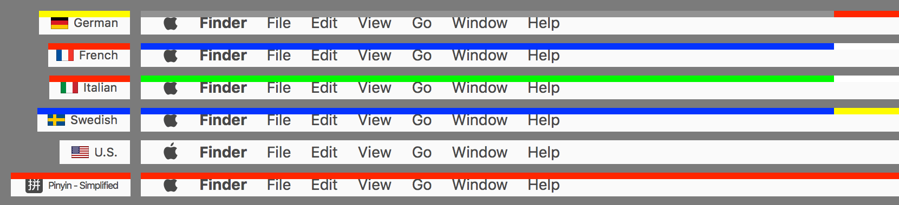

ShowyEdge


ShowyEdge displays a color bar at the top edge of the screen depending on the current input source.
You can recognize the current input source very easily even if you are using fullscreen apps.
Download ShowyEdge-3.2.0 For macOS 10.9+

ShowyEdge is safe from the Sparkle Updater Vulnerability because ShowyEdge uses HTTPS for feeds and files.
Installation
-
Open a downloaded dmg file.
-
Move ShowyEdge icon into Applications icon.
Then, ShowyEdge will be installed into Applications. -
Open ShowyEdge from Launchpad.

-
Preferences will be opened.
Change values if needed and then close the window.
Usage
ShowyEdge provides preset colors for many input sources.
Therefore you can use ShowyEdge without any configuration.
For example, a color bar becomes blue-white-red when you change input source to French.
Color configuration
You can configure colors by following procedures if there is no preset colors for your input source or you want to change the color.
-
Open ShowyEdge from Launchpad.
- Preferences will be opened. Then, press "Add custom color" button on Preferences.
- Change colors of input source.
How to quit
-
Open ShowyEdge from Launchpad.
- Press "Quit ShowyEdge" button.
Uninstall
- First, quit ShowyEdge.
- Open Applications in Finder and then delete ShowyEdge.
Development
Version History
Version 3.2.0 Mar 23, 2017 Download
Version 3.1.0 Apr 17, 2016 Download
Version 3.0.0 Dec 3, 2015 Download
Version 2.2.0 Aug 30, 2015 Download
- Close button has been added.
- "Check for updates" (Sparkle) has been updated.
Version 2.1.0 Dec 2, 2014 Download
- Multiple displays support has been improved. The indicator is shown in the all screen.
- Quit button has been added.
Version 2.0.0 Aug 24, 2014 Download
- "Check for updates" (Sparkle) has been updated.
- The minimum OS version requirement has been changed. (macOS 10.6 -> macOS 10.7)
Version 1.8.0 Mar 13, 2014 Download
- Multiple displays have been supported.
Version 1.7.0 Oct 18, 2013 Download
- Added "Indicator opacity" configuration.
- Signed with Developer ID..
Version 1.6.0 Oct 13, 2013 Download
- Added "Use custom frame" configuration.
- Added "Show icon in Dock" configuration.
- Fixed minor issues.
Version 1.4.0 Jun 16, 2013 Download
- Revised file permissions.
Version 1.3.0 Jun 14, 2013 Download
- First release.